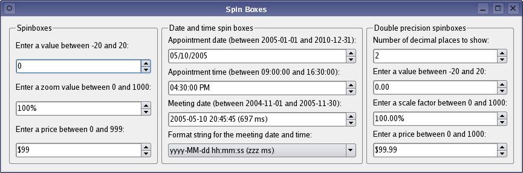

| Home · All Classes · Main Classes · Grouped Classes · Modules · Functions |
Files:
The Spin Boxes example shows how to use the many different types of spin boxes available in Qt, from a simple QSpinBox widget to more complex editors like the QDateTimeEdit widget.

| Copyright © 2006 Trolltech | Trademarks | Qt 4.1.2 |